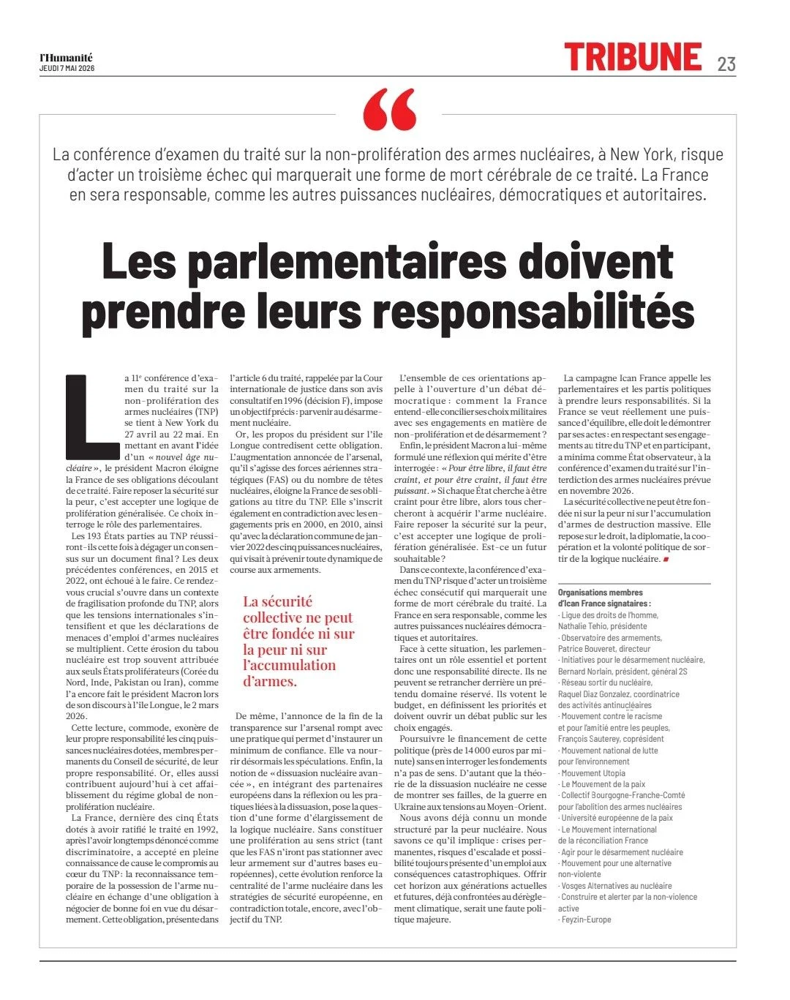

Tribune collective de L’Humanité
Non-prolifération nucléaire, une tribune appelle les parlementaires à agir
Date indiquée par Facebook · 7 mai 2026
Repères éditoriaux
Dans L’Humanité, les associations signataires alertent sur les risques d’un nouvel échec de la conférence d’examen du Traité sur la non-prolifération des armes nucléaires. Elles demandent aux parlementaires de prendre leurs responsabilités en faveur du désarmement.
Texte conservé avec la publication
« Non-prolifération des armes nucléaires : les parlementaires doivent prendre leur responsabilité » Tribune collective publiée dans l'Humanité.
La conférence d’examen du Traité sur la non-prolifération des armes nucléaires (TNP) qui s’ouvre à New York, risque d’acter un troisième échec consécutif qui marquerait une forme de mort cérébrale du traité. La France en sera responsable, comme les autres puissances nucléaires démocratiques et autoritaires. 18 organisations membres de la campagne ICAN France appellent à la responsabilité des parlementaires
La 11e conférence d’examen du Traité sur la non-prolifération des armes nucléaires (TNP) se tient à New York du 27 avril au 22 mai. En mettant en avant l’idée d’un « nouvel âge nucléaire », le président Macron éloigne la France de ses obligations découlant de ce Traité. Ce choix interroge le rôle des parlementaires.
Les 193 Etats parties au Traité sur la non-prolifération des armes nucléaires (TNP) réussiront-ils cette fois à dégager un consensus sur un document final ? Les deux précédentes conférences, en 2015 et 2022, ont échoué à le faire. Ce rendez-vous crucial, s’ouvre dans un contexte de fragilisation profonde du TNP, alors que les tensions internationales s’intensifient et que les déclarations de menaces d’emploi d’armes nucléaires se multiplient. Cette érosion du tabou nucléaire est trop souvent attribuée aux seuls Etats proliférateurs (Corée du Nord, Inde, Pakistan ou Iran) comme l’a encore fait le président Macron lors de son discours à l’Ile Longue le 2 mars 2026.
Cette lecture, commode, exonère de leur propre responsabilité les cinq puissances nucléaires dotées, membres permanents du Conseil de sécurité, de leur propre responsabilité. Or, elles aussi contribuent aujourd’hui à cet affaiblissement du régime global de non-prolifération nucléaire.
La France, dernière des cinq Etats dotés à avoir ratifié le traité en 1992, après l’avoir longtemps dénoncé comme discriminatoire, a accepté en pleine connaissance de cause le compromis au coeur du TNP : la reconnaissance temporaire de la possession de l’arme nucléaire en échange d’une obligation à négocier de bonne foi en vue du désarmement. Cette obligation, présente dans l’article 6 du traité, rappelée par la Cour internationale de justice dans son avis consultatif, en 1996 (décision F), impose un objectif précis : parvenir au désarmement nucléaire.
Or les propos du président à l’Ile Longue contredisent cette obligation. L’augmentation annoncée de l’arsenal, qu’il s’agisse des forces aériennes stratégiques (FAS) ou du nombre de têtes nucléaires, éloigne la France de ses obligations au titre du TNP. Elle s’inscrit également en contradiction avec les engagements pris en 2000, en 2010, ainsi qu’avec la déclaration commune de janvier 2022 des cinq puissances nucléaires, qui visait à prévenir toute dynamique de course aux armements.
De même, l’annonce de la fin de la transparence sur l’arsenal rompt avec une pratique qui permet d’instaurer un minimum de confiance. Elle va nourrir désormais les spéculations. Enfin, la notion de « dissuasion nucléaire avancée », en intégrant des partenaires européens dans la réflexion ou les pratiques liées à la dissuasion, pose la question d’une forme d’élargissement de la logique nucléaire. Sans constituer une prolifération au sens strict, (tant que les FAS n’iront pas stationner avec leur armement sur d’autres bases européennes) cette évolution renforce la centralité de l’arme nucléaire dans les stratégies de sécurité européenne, en contradiction totale, encore, avec l’objectif du TNP.
L’ensemble de ces orientations appelle à l’ouverture d’un débat démocratique : comment la France entend-elle concilier ses choix militaires avec ses engagements en matière de non-prolifération et de désarmement ?
Enfin, le président Macron a lui-même formulé une réflexion qui mérite d’être interrogée : « Pour être libre, il faut être craint, et pour être craint, il faut être puissant. » Si chaque Etat cherche à être craint pour être libre, alors tous chercheront à acquérir l’arme nucléaire. Faire reposer la sécurité sur la peur, c’est accepter une logique de prolifération généralisée. Est-ce un futur souhaitable ?
Dans ce contexte, la conférence d’examen du TNP risque d’acter un troisième échec consécutif qui marquerait une forme de mort cérébrale du traité. La France en sera responsable, comme les autres puissances nucléaires démocratiques et autoritaires.
Face à cette situation, les parlementaires ont un rôle essentiel et portent donc une responsabilité directe. Ils ne peuvent se retrancher derrière un prétendu domaine réservé. Ils votent le budget, en définissent les priorités, et doivent ouvrir un débat public sur les choix engagés.
Poursuivre le financement de cette politique (près de 14 000 euros par minute) sans en interroger les fondements n’a pas de sens. D’autant que la théorie de la dissuasion nucléaire ne cesse de montrer ses failles, de la guerre en Ukraine aux tensions au Moyen-Orient.
Nous avons déjà connu un monde structuré par la peur nucléaire. Nous savons ce qu’il implique : crises permanentes, risques d’escalade et possibilité toujours présente d’un emploi aux conséquences catastrophiques. Offrir cet horizon aux générations actuelles et futures, déjà confrontées au dérèglement climatique, serait une faute politique majeure.
La campagne ICAN France appelle les parlementaires et les partis politiques à prendre leurs responsabilités. Si la France se veut réellement une puissance d’équilibre, elle doit le démontrer par ses actes : en respectant ses engagements au titre du TNP et en participant, a minima comme État observateur, à la conférence d’examen du Traité sur l’interdiction des armes nucléaires prévue en novembre 2026.
La sécurité collective ne peut être fondée ni sur la peur, ni sur l’accumulation d’armes de destruction massive. Elle repose sur le droit, la diplomatie, la coopération et la volonté politique de sortir de la logique nucléaire.
Organisations membres de ICAN France signataires :
LDH (Ligue des droits de l’Homme), Nathalie Tehio, présidente ; Observatoire des armements, Patrice Bouveret, directeur ; Initiatives pour le Désarmement Nucléaire, Bernard Norlain Président, Général 2S ; Réseau sortir du nucléaire, Raquel Diaz Gonzalez, Coordinatrice des activités antinucléaires ; Mouvement contre le racisme et pour l’amitié entre les peuples, François Sauterey co-président ; Mouvement National de Lutte pour l’Environnement, MNLE ; Mouvement UTOPIA ; Le Mouvement de la paix ; Collectif Bourgogne Franche-Comté pour l’Abolition des armes nucléaires ; Université Européenne de la Paix ; Le Mouvement international de la Réconciliation, MIR-France ; Agir pour le Désarmement Nucléaire, ADN ; Mouvement pour une Alternative Non-violente, MAN ; Vosges Alternatives au Nucléaire ; Construire et Alerter par la non-violence Active, CANVA ; Feyzin-Europe.
« Non-prolifération des armes nucléaires : les parlementaires doivent prendre leur responsabilité » Tribune collective publiée dans @[100064860845478:2048:l'Humanité].
La conférence d’examen du Traité sur la non-prolifération des armes nucléaires (TNP) qui s’ouvre à New York, risque d’acter un troisième échec consécutif qui marquerait une forme de mort cérébrale du traité. La France en sera responsable, comme les autres puissances nucléaires démocratiques et autoritaires. 18 organisations membres de la campagne ICAN France appellent à la responsabilité des parlementaires
La 11e conférence d’examen du Traité sur la non-prolifération des armes nucléaires (TNP) se tient à New York du 27 avril au 22 mai. En mettant en avant l’idée d’un « nouvel âge nucléaire », le président Macron éloigne la France de ses obligations découlant de ce Traité. Ce choix interroge le rôle des parlementaires.
Les 193 Etats parties au Traité sur la non-prolifération des armes nucléaires (TNP) réussiront-ils cette fois à dégager un consensus sur un document final ? Les deux précédentes conférences, en 2015 et 2022, ont échoué à le faire. Ce rendez-vous crucial, s’ouvre dans un contexte de fragilisation profonde du TNP, alors que les tensions internationales s’intensifient et que les déclarations de menaces d’emploi d’armes nucléaires se multiplient. Cette érosion du tabou nucléaire est trop souvent attribuée aux seuls Etats proliférateurs (Corée du Nord, Inde, Pakistan ou Iran) comme l’a encore fait le président Macron lors de son discours à l’Ile Longue le 2 mars 2026.
Cette lecture, commode, exonère de leur propre responsabilité les cinq puissances nucléaires dotées, membres permanents du Conseil de sécurité, de leur propre responsabilité. Or, elles aussi contribuent aujourd’hui à cet affaiblissement du régime global de non-prolifération nucléaire.
La France, dernière des cinq Etats dotés à avoir ratifié le traité en 1992, après l’avoir longtemps dénoncé comme discriminatoire, a accepté en pleine connaissance de cause le compromis au coeur du TNP : la reconnaissance temporaire de la possession de l’arme nucléaire en échange d’une obligation à négocier de bonne foi en vue du désarmement. Cette obligation, présente dans l’article 6 du traité, rappelée par la Cour internationale de justice dans son avis consultatif, en 1996 (décision F), impose un objectif précis : parvenir au désarmement nucléaire.
Or les propos du président à l’Ile Longue contredisent cette obligation. L’augmentation annoncée de l’arsenal, qu’il s’agisse des forces aériennes stratégiques (FAS) ou du nombre de têtes nucléaires, éloigne la France de ses obligations au titre du TNP. Elle s’inscrit également en contradiction avec les engagements pris en 2000, en 2010, ainsi qu’avec la déclaration commune de janvier 2022 des cinq puissances nucléaires, qui visait à prévenir toute dynamique de course aux armements.
De même, l’annonce de la fin de la transparence sur l’arsenal rompt avec une pratique qui permet d’instaurer un minimum de confiance. Elle va nourrir désormais les spéculations. Enfin, la notion de « dissuasion nucléaire avancée », en intégrant des partenaires européens dans la réflexion ou les pratiques liées à la dissuasion, pose la question d’une forme d’élargissement de la logique nucléaire. Sans constituer une prolifération au sens strict, (tant que les FAS n’iront pas stationner avec leur armement sur d’autres bases européennes) cette évolution renforce la centralité de l’arme nucléaire dans les stratégies de sécurité européenne, en contradiction totale, encore, avec l’objectif du TNP.
L’ensemble de ces orientations appelle à l’ouverture d’un débat démocratique : comment la France entend-elle concilier ses choix militaires avec ses engagements en matière de non-prolifération et de désarmement ?
Enfin, le président Macron a lui-même formulé une réflexion qui mérite d’être interrogée : « Pour être libre, il faut être craint, et pour être craint, il faut être puissant. » Si chaque Etat cherche à être craint pour être libre, alors tous chercheront à acquérir l’arme nucléaire. Faire reposer la sécurité sur la peur, c’est accepter une logique de prolifération généralisée. Est-ce un futur souhaitable ?
Dans ce contexte, la conférence d’examen du TNP risque d’acter un troisième échec consécutif qui marquerait une forme de mort cérébrale du traité. La France en sera responsable, comme les autres puissances nucléaires démocratiques et autoritaires.
Face à cette situation, les parlementaires ont un rôle essentiel et portent donc une responsabilité directe. Ils ne peuvent se retrancher derrière un prétendu domaine réservé. Ils votent le budget, en définissent les priorités, et doivent ouvrir un débat public sur les choix engagés.
Poursuivre le financement de cette politique (près de 14 000 euros par minute) sans en interroger les fondements n’a pas de sens. D’autant que la théorie de la dissuasion nucléaire ne cesse de montrer ses failles, de la guerre en Ukraine aux tensions au Moyen-Orient.
Nous avons déjà connu un monde structuré par la peur nucléaire. Nous savons ce qu’il implique : crises permanentes, risques d’escalade et possibilité toujours présente d’un emploi aux conséquences catastrophiques. Offrir cet horizon aux générations actuelles et futures, déjà confrontées au dérèglement climatique, serait une faute politique majeure.
La campagne ICAN France appelle les parlementaires et les partis politiques à prendre leurs responsabilités. Si la France se veut réellement une puissance d’équilibre, elle doit le démontrer par ses actes : en respectant ses engagements au titre du TNP et en participant, a minima comme État observateur, à la conférence d’examen du Traité sur l’interdiction des armes nucléaires prévue en novembre 2026.
La sécurité collective ne peut être fondée ni sur la peur, ni sur l’accumulation d’armes de destruction massive. Elle repose sur le droit, la diplomatie, la coopération et la volonté politique de sortir de la logique nucléaire.
Organisations membres de ICAN France signataires :
LDH (Ligue des droits de l’Homme), Nathalie Tehio, présidente ; Observatoire des armements, Patrice Bouveret, directeur ; Initiatives pour le Désarmement Nucléaire, Bernard Norlain Président, Général 2S ; Réseau sortir du nucléaire, Raquel Diaz Gonzalez, Coordinatrice des activités antinucléaires ; Mouvement contre le racisme et pour l’amitié entre les peuples, François Sauterey co-président ; Mouvement National de Lutte pour l’Environnement, MNLE ; Mouvement UTOPIA ; Le Mouvement de la paix ; Collectif Bourgogne Franche-Comté pour l’Abolition des armes nucléaires ; Université Européenne de la Paix ; Le Mouvement international de la Réconciliation, MIR-France ; Agir pour le Désarmement Nucléaire, ADN ; Mouvement pour une Alternative Non-violente, MAN ; Vosges Alternatives au Nucléaire ; Construire et Alerter par la non-violence Active, CANVA ; Feyzin-Europe.

Sources
Archive rouge · export Facebook · AR-0002-FB-00783
À lire aussi · Le PCF dénonce le rôle de l’OTAN